caption
author
time
Web security：
Source：github---sqli-labs
Time Used: 4 Days
Main: it is based on comment fix, boolean injection ,double query injection ...etc, very awesome!
My study notes PDF: -----sql-labs
脱壳：
学习心得：大部分压缩壳可以根据ESP定律来解决，100%的压缩壳用单步调试，调到OEP。
压缩壳只是将文件压缩，达到减小文件体积的目的。
保护壳：等待覆盖
压缩壳学习笔记PDF: -----压缩壳笔记
保护壳笔记PDF：-----保护壳笔记
游戏合集
| Name | URL | password |
| GTA5终极版 1000辆载具+300位英雄 | https://pan.baidu.com/s/1bvdKqruMB-NKGozSCjJoIQ | 59ko |
| 杀手5/6 | https://pan.baidu.com/s/1Szwd2kpVi7ATwPm0ARerug | grft |
| 使命召唤1—14 | https://pan.baidu.com/s/1KQeK9Zbkn8yZjSgbafyNww | k3s3 |
| 彩虹六号围攻 | https://pan.baidu.com/s/1gfG6S7p | 4d6r |
| NBA2K18 | https://pan.baidu.com/s/1dEA5SrR | crp6 |
| 巫师3狂猎 | https://pan.baidu.com/s/1bpwBW79 | tcnd |
| 文明6 | https://pan.baidu.com/s/1jHRS6sm | w2dn |
| 丧尸围城4 | https://pan.baidu.com/s/1mhW6Z5Q | 0y2e |
| 全面战争 | https://pan.baidu.com/s/1o89cBLS | ks6k |
| 英雄无敌7 | https://pan.baidu.com/s/1qYGzALA | h2ja |
| 三国志13 | https://pan.baidu.com/s/1sluGHx7 | mrqe |
| NBA2K17传奇版 | https://pan.baidu.com/s/1jHTPIGe | m8ef |
| 战地1 | https://pan.baidu.com/s/1o7GQkRo | 0495 |
| 正当防卫3 | https://pan.baidu.com/s/1c1WILyC | dyvi |
| 杀手6 | https://pan.baidu.com/s/1cu3tKU | o45b |
| 质量效应1 | https://pan.baidu.com/s/1o8bfiEA | r8as |
| 孤岛惊魂：原始杀戮 | https://pan.baidu.com/s/1hsbqspI | nexy |
| 火影忍者：究极忍者风暴3 | https://pan.baidu.com/s/1c1FddmS | 9hai |
| 战地４ | https://pan.baidu.com/s/1kVFKDIR | m6op |
| 波斯王子4 | https://pan.baidu.com/s/1dEZZcMP | cbjk |
| 实况2016 | https://pan.baidu.com/s/1jIHNMey | |
| 鬼泣5 | https://pan.baidu.com/s/1dEJdz8l | y0vw |
| 量子破碎 | https://pan.baidu.com/s/1kVI1sFl | uajd |
| 杀出重围:分裂 | https://pan.baidu.com/s/1mhYxKAO | oypy |
| 质量效应2 | https://pan.baidu.com/s/1hsI6WmC | furc |
| 鬼泣4特别版 | https://pan.baidu.com/s/1mhZJz9e | if01 |
| 使命13无限战争 | https://pan.baidu.com/s/1i4Cjauh | onjx |
| 上古卷轴5高清重制版 | https://pan.baidu.com/s/1hrNGiZq | zz93 |
| 圣域2 | https://pan.baidu.com/s/1eR75oUQ | 5ji7 |
| 变形金刚：毁灭 | https://pan.baidu.com/s/1bp3hR6f | v7q8 |
| 亚尔斯兰战记X无双 | https://pan.baidu.com/s/1pKJyk4b | 4qez |
| 最终幻想13 | https://pan.baidu.com/s/1gf8zyM3 | hgf1 |
| 忍者神龟：冲出阴暗 | https://pan.baidu.com/s/1mh7sYqk | g1wx |
| 僵尸 | https://pan.baidu.com/s/1c1CtbW0 | fc8z |
| 冥河：暗影大师 | https://pan.baidu.com/s/1c1VpP2g | 7uag |
| 海岛大亨5 | https://pan.baidu.com/s/1o7Ea1Oe | 5wof |
| 神界3 | https://pan.baidu.com/s/1c1NVfo | osee |
剩下不想复制了太累了哈哈哈，微信上问我有没有吧..
工具：OllyDbg LCG版， TraceMe.EXE
提前准备：这一部分需要提前了解一点WIN32编程的简单Windows API，例如 获取文本框函数getDlgItemText()，messageBox()等
破解有两种思路：一种是暴力破解法，一种逆向分析法，前者简单粗暴，后者细腻精致。如同和女孩子相处一样，粗暴的方式往往不受人待见，细腻的态度才能得到喜欢。而且后者不改变软件本身的数字签名，如果在文件自校验的时候也较好处理。
一、首先演示的是最简单的暴力破解法
暴力破解的方式大概方法有：
1.NOP法---就是将一些将要执行的指令用不执行操作(nop)替换掉。2.条件转移(如je jne jcxz jb jl...)改成无条件转移(jmp)
好的进入主题，放图
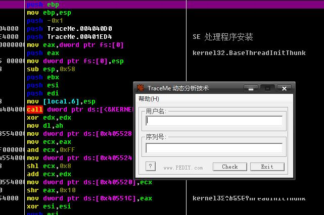1.我们先输入文字，看看会发生什么
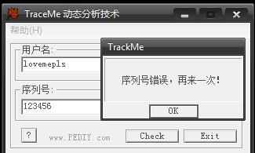2.记好我们输入的用户名lovemepls 和序列号123456,可以知道如果我们点击“check”按钮，程序本身获取用户名和序列号后会执行一个判断是否正确
所以我们找到getDlgItemText或者getDlgItemTextA函数，在那里下一个断点
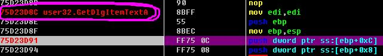3.当我们继续向下F8走的时候突然有一个惊奇的发现！
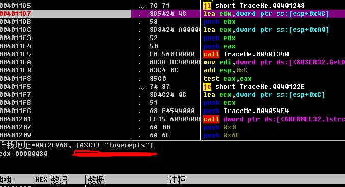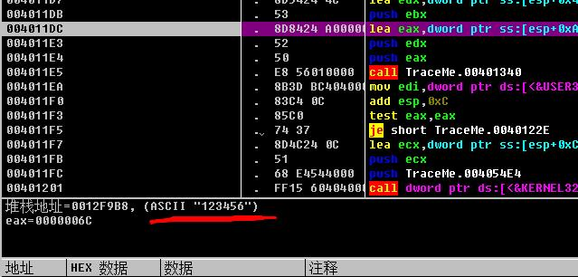
这个不是我们刚才输入的账号和密码吗？
4.既然现在获取了账号和密码，我们可以不难推断出下一步程序的操作，肯定是判断操作!,我们继续分析
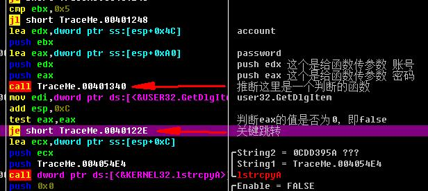5.我们知道，我们输入的用户和序列号是错误的，而且根据所传参数可知，这个CALL将要执行的函数必定是一个判断函数。 在后面的je跳转了解到这个跳转已经实行，如果我们继续执行下去就会弹出那个提示错误的对话框，所以我们不让他跳转，把je改成jnz,然后运行
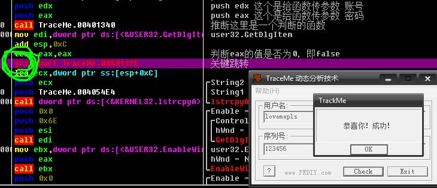6.最后它弹出我们成功的结果，然后我们把文件保存，随意输一个数据，看看能不能成功！
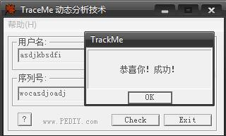7.可见，这个暴力破解部分就算完成了！
二、逆向分析法
我们进入到暴力破解法第四步，看到那个判断函数，看它是如何判断的
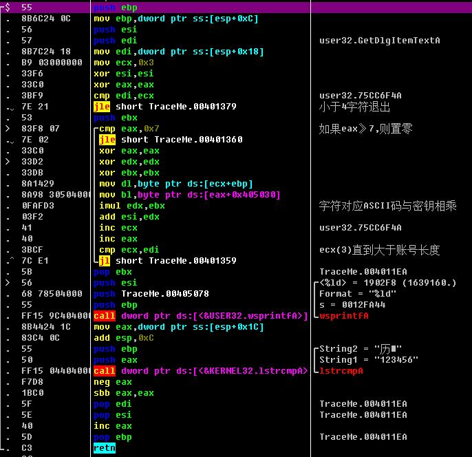这里并没有涉及到十分难的算法什么的，只是简单的字符ASCII码计算而已，我这里不多赘述，给大家写了一下流程和提纲。
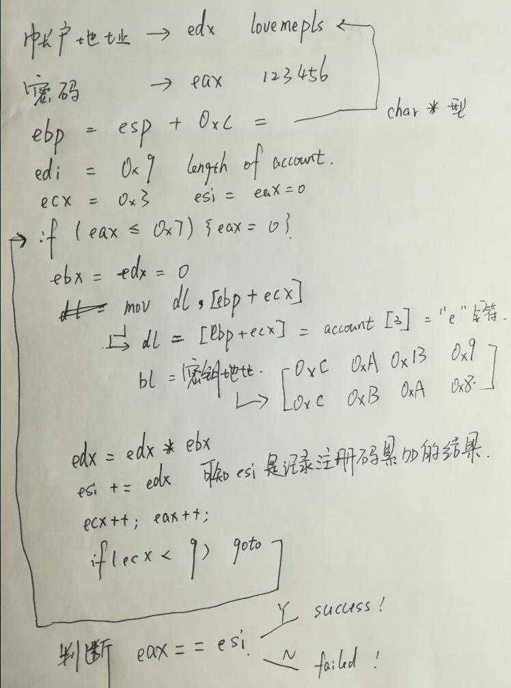
最后根据分析过程，用C语言写出注册机，大功告成。
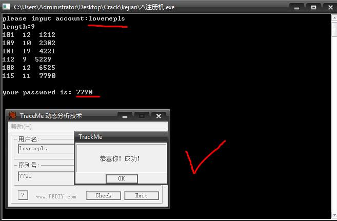完结时间：2018/7/9
学习书籍：王爽《汇编语言》(第二版)江大图书馆4楼南面丛书
学习时长：3 个月
第一章：基础知识(略)
第二章：寄存器(80x86)
1.通用寄存器(16位)：AX(ah,al),BX,CX,DX
2.物理地址 = 段地址*16 + 偏移地址(offset)
3.段寄存器：①CS+IP (code segment) ②SS+SP (stack segmtnt) ③DS + [] (data segment)
4.段寄存器注意事项：不可将数据直接传送至段寄存器！！（例：mov cs,2000h × mov ax,2000h, mov cs,ax）
第三章：寄存器(内存访问)
字单元(16bit)与字节单元（8bit）的区别
push: sp-=2 pop:sp+=2(入栈弹栈都是以字为单位进行的！)
第四章：第一个程序
使用工具 MASM.exe LINK.EXE ...(略，以后基本不用)
第五章：[bx]和loop指令
loop循环的次数是要看CX寄存器的大小，CX为几，就循环几次,然后继续向下执行
第六章：包含多个段的程序（了解即可）
第七章：更灵活的定位内存地址（si 和 di）
第八章：数据处理的两个基本问题
字节单元数据处理：mov byte ptr [di],1
字单元数据处理：mov word ptr [di],1
双字节单元数据处理：mov dword ptr [di],1
div 和 mul 指令
div用法: div seg(内存单元) 即 div 除数
如果除数为8位，则被除数(16位)放在AX中，AL放商，AH放余数
如果除数为16位，则被除数(32位)低十六位放在AX中，高十六位放在DX中，AX放商，DX放余数
mul用法: mul seg(内存单元)
另一个乘数放在al(8位)或者ax(16位)中
结果默认放在AX中，高16位放在DX中
★第九章：转移指令的原理(重要)
offset操作符：取标号的偏移地址
jump short s(标号) 机器码记录的是往前或者往后跳转的步数(名词：位移)，而不是目标的偏移地址
jump word ptr----段内转移
jump dword ptr----段间转移
JCXZ指令（记忆技巧：JMP if CX seg is equal to Zero）
★第十章：CALL 和 RET 指令(重要)
call seg:将cs 与ip 的值压入栈, 然后jmp到seg 处----相当于调用函数
ret/retf:将栈中的值给ip 或cs 与ip----相当于函数返回
★第十一章：标志寄存器(重要)
简介：在破解的过程中,经常要看标志寄存器和配合转义指令完成关键跳转。
常用标志寄存器（4个）：ZF CF OF SF (F表示flag即寄存器，Z--zero C--carry--是否结尾 O--overflow S--sign--正负)
cmp 指令经常配合条件转义指令使用如：je jne jle jbe jb jl 等等十分多的条件转移指令
到十一章软件部分就结束了，后面一些章节设计到了硬件方面，可以选择继续深修
众多逆向调试工具就"基本"解锁了例如：OllyDbg ,IDA PRO, CE...
摘自WiKiLeak---
防火长城（英语：Great Firewall (of China)，常用简称：GFW，中文也称中国国家防火墙，中国大陆民众俗称墙、防火墙、功夫网等等），是对中华人民共和国政府在其互联网边界审查系统（包括相关行政审查系统）的统称。此系统起步于1998年，其英文名称得自于2002年5月17日Charles R. Smith所写的一篇关于中国网络审查的文章《The Great Firewall of China》，取与Great Wall（长城）相谐的效果，简写为Great Firewall，缩写GFW。随着使用的拓广，中文“墙”和英文“GFW”有时也被用作动词，网友所说的“被墙”即指网站内容被防火长城所屏蔽或者指服务器的通讯被封阻，“翻墙”也被引申为突破网络审查浏览境内外被屏蔽的网站或使用服务（如被GFW屏蔽的网盘Dropbox）的行为。
一般情况下，防火长城主要指中国政府监控和过滤互联网国际出口上内容的软硬件系统的集合。例如监视系统就曾与美商合作，构建类似美国的棱镜计划的深度侦查机制，但中国政府并进一步设置将查获的特定网点阻断等，造成大家所熟知的连线错误现象，因此防火墙不是中国特有的一个专门单位，是由分散部门的各服务器和路由器等设备，加上相关公司的应用程序所构成，是一个跨军民合作的大型信息管制系统，实际上就如大多数国家也会创建网络监管一样。不过其他政府的管理仅止于金融洗钱、国际诈骗等犯罪行为，与中国的审查机制有着相当大的不同。防火长城的作用主要是监控国际网关上的通讯，对认为不匹配中共官方要求的传输内容，进行干扰、阻断、屏蔽。由于中国网络审查广泛，中国国内含有“不合适”内容的网站，会受到政府直接的行政干预，被要求自我审查、自我监管，乃至关闭，故防火长城主要作用在于分析和过滤中国境外网络的信息互相访问。中国工程院院士、北京邮电大学前校长方滨兴是防火长城关键部分的首要设计师。
然而，防火长城对网络内容的审查是否限制和违反了言论自由，一直是受争议的话题，官方说词也相当笼统。有报告认为，防火长城其实是一种圆形监狱式的全面监控，以达到自我审查的目的，因为网络的分布式架构，完全封锁言论是不可能的，事实也证明，任何人在中国大陆地区都能够在低调的情况下发表敏感言论，但是对于封锁的恐惧，许多人不希望发出的消息会被屏蔽而选择中性的讲法或不说出来，例如一套侦测中国官方部署的DNS污染服务器工具在GitHub（世界最大的开源代码托管服务）上开源发布后，引起了激烈的争论。一些人认为，此举会激怒“墙”的管理者，导致GitHub被封锁，影响墙内程序员学习交流，所以应该删除这样的代码仓库，“保持技术社区的纯粹”。另一些人，则认为翻墙是程序员的基本技能，表示不受影响，所以力挺该项目，并极力反对技术社区加入“自我审查”的行列。而中共当局一直没有正式对外承认防火长城的存在，如当有记者在外交部新闻发布会上问及互联网封锁等问题的时候，发言人的答案基本都是“中国政府鼓励和支持互联网发展，依法保障公民言论自由，包括网上言论自由。同时，中国对互联网依法进行管理，这匹配国际惯例。”方滨兴曾在访问中被问及防火长城是如何运作的时候，他指这是“国家机密”。不过2015年1月与官方有密切关系的《环球时报》则发布报道曾公开宣扬其存在。可以发现到官方对墙的理解随时间发展也不断改变，从最初资讯的遮蔽与阻止流通用途，进一步到不仅止于过滤政府认为不满意的各种内容，更到了以发展中国互联网经济为名，企图透过封闭隔绝将网路国界化，视外资为经济渗透、干涉内政，这些墙存在意义的舆论宣传，逐步强化了设墙政策的合理性与正当性，但时至今日中国仍一直宣称是“依法管理以保障网路主权”，如从官方媒体公开发布的报道里就曾涉及防火长城的监控，从侧面证明其的确存在。
主要技术：
1.域名解析服务缓存污染
2.针对境外的IP地址封锁
3.IP地址特定端口封锁
4.无状态TCP连接重置
5.对加密连接的干扰
6.TCP关键字阻断
.....
第一套[老男孩python3全栈一期]python全栈
链接：https://pan.baidu.com/s/1RRcq27X0jzD5lVyDcwxRMg 密码：rvjd
2, 第二套[老男孩2017python3全栈二期]
链接：http://pan.baidu.com/s/1eRZ9GEA 密码：ljow
3, 第三套[2017最新老男孩python3.x]（28周）
链接：http://pan.baidu.com/s/1jICbjj4 密码：pkmz
4, 第四套 2017最新python就业班
链接：http://pan.baidu.com/s/1pL4z1Jt 密码：me89
5, 第五套 Python入门+进阶+提高+运维+项目+数据分析
链接：http://pan.baidu.com/s/1sleCVjn 密码：ekyp
6，第六套 最新linux入门+进阶+提高+架构师
链接：https://pan.baidu.com/s/1PzdQbvbXMhZt8AAWED7Lrg 密码：9z5w
7，python3爬虫课程视频 链接：http://pan.baidu.com/s/1nvh2ZRr 密码：z20f
8，python最新就业班
链接：https://pan.baidu.com/s/1eUhcVOu 密码：oxc0
9，2400元python Flask 链接：http://pan.baidu.com/s/1skLajhV 密码：dbtl
10，Django基于Python的Web框架专辑视频教程 ：https://pan.baidu.com/s/1M2G-zOK4xN8zZnpgh6iKOw 密码：zg0v
简介：在网页设计中的响应式设计中，需要根据不同用户端来特定设计一些内容
在服务器端，可以根据用户端来发送不同的数据。例如Youtube在手机端会重定向至 m.youtube.com地址
如果遇到机器访问服务器的时候可以防止一些爬虫，来减少服务器压力。
js的navigator对象中就含有userAgent属性可以了解，用Python也可以"伪造" userAgent来完成爬虫
var ua = navigator.userAgent;
var ipad = ua.match(/(iPad).*OS\s([\d_]+)/),
isIphone = !ipad && ua.match(/(iPhone\sOS)\s([\d_]+)/),
isAndroid = ua.match(/(Android)\s+([\d.]+)/),
isMobile = isIphone || isAndroid;
学习阶段：枚举法
收获：1.用二进制的"另类"的表现形式。2.与、或、异或运算的知识及技巧。3.思维方式
重要的考虑点：
1.首先是运算速度的问题:打破常规，不适用二位数组，根据都是1或0的特征，来二进制来表达每行的情况，用与、或、异或运算来完成对应操作。
2.确定方案的问题，确定了第一行的灯，随机产生的连锁效应达到以下行的解决方案。
3.边界灯处理的问题
4.最最arcane的地方是异或运算：1^0=1 1^1=1 0^0=0 0^1=0
Syntax:
// algorithm.cpp: 定义控制台应用程序的入口点。
//
#include "stdafx.h"
#include < iostream>
#include < cstdio>
#include < cmath>
#include< cstring>
using namespace std;
char oL[5], lights[5], result[5];
int GetBit(char c, int i) {
return (c >> i) & 1;
}
void SetBit(char &c, int i, int v) {
if (v)c |= (1 << i);
else c &= ~(1 << i);
}
void FlipBit(char &c, int i) {
c ^= (1 << i);
}
void OutputResult1(int t, char result[]) {
printf("PUZZLE # %d\n", t);
for (int i = 0; i < 5; i++) {
for (int j = 0; j < 6; j++)
{
printf("%d ", GetBit(result[i], j));
}
printf("\n");
}
}
int main()
{
int T;
scanf("%d", &T);
for (int t = 0; t < T; t++)
{
for (int j = 0; j < 5; j++)
for (int k = 0; k < 6; k++)
{
int s;
scanf("%d", &s);
SetBit(oL[j], k, s);
}
for (int n = 0; n < 64; n++) {
int switchs = n;
memcpy(lights, oL, sizeof(oL));
for (int i = 0; i < 5; i++) {
result[i] = switchs;
for (int j = 0; j < 6; j++)
{
if (GetBit(switchs, j)) {
if (j > 0)FlipBit(lights[i], j - 1);
FlipBit(lights[i], j);
if (j < 5)FlipBit(lights[i], j + 1);
}
}
if (i < 5)lights[i + 1] ^= switchs;
switchs = lights[i];
}
if (lights[4] == 0) {
OutputResult1(t+1,result);
break;
}
}
}
return 0;
}
// ArrayDS.cpp: 定义控制台应用程序的入口点。
//
#include "stdafx.h"
#include"stdio.h"
#include"iostream"
#include"cstdarg"
using namespace std;
//There are two type of array Matrix:
//1. Special Matrix
//2. Sparse Matrix
//3. Normal Matrix
struct arrayMatrix
{
int *p=0; //the basic position of this matrix
int dim; //Its dimension
int *bounds = 0;//every dimention's boundary
int *constants = 0;//It's used to note the coefficient number
bool TOF=false;
};
//dim is belong to [1,10]
int initArray(arrayMatrix &arrayA,int dim,...) {
if (dim < 1 || dim >= 10)return -1;// It is illegal to be over the [1,10], it is set by me.
arrayA.dim = dim;
arrayA.bounds = new int[dim];
if (!arrayA.bounds)return -1;
va_list arg;
va_start(arg, dim);
int total = 1;
for (int i = 0; i < dim; i++)
{
arrayA.bounds[i] = va_arg(arg, int);
cout << arrayA.bounds[i]<<" ";
if (arrayA.bounds[i] < 1)return -2;
total *= arrayA.bounds[i];
}
va_end(arg);
arrayA.p = new int[total];
arrayA.constants = new int[dim];
arrayA.constants[dim - 1] = 1;
for (int i = dim-2; i > -1; i--)
{
arrayA.constants[i] = arrayA.bounds[i+1]*arrayA.constants[i+1];
}
arrayA.TOF = true;
return 1;
}
bool assain(arrayMatrix &arrayA,int num,...) {
if (!arrayA.TOF)return false;
va_list arg;
va_start(arg, num);
int dim = arrayA.dim,a[3];
for (int i = 0; i < dim; i++)
{
int b = va_arg(arg, int);
if (b < 1&&b>arrayA.bounds[i])return false;
a[i] = b;
}
va_end(arg);
int pos = 0;
for (int i = 0; i < dim; i++)
{
pos += a[i] * arrayA.constants[i];
}
arrayA.p[pos] = num;
}
//if getValue==-1212121, getting failed
int getValue(arrayMatrix arrayA,...) {
if (!arrayA.TOF)return -1212121;
va_list arg;
va_start(arg, arrayA);
int dim = arrayA.dim, a[3];
for (int i = 0; i < dim; i++)
{
int b = va_arg(arg, int);
if (b < 1 && b>arrayA.bounds[i])return -1212121;
a[i] = b;
}
va_end(arg);
int pos = 0;
for (int i = 0; i < dim; i++)
{
pos += a[i] * arrayA.constants[i];
}
return arrayA.p[pos];
}
int main()
{
arrayMatrix array1;
initArray(array1,3,2,3,4);
assain(array1, 50, 1, 1, 1);
cout<< getValue (array1, 1, 1, 1);
return 0;
}
#include "stdafx.h"
#include"iostream"
#define VERTEX_NUM 10
#define ARC_NUM 55
bool isVisited[VERTEX_NUM];
int a[ARC_NUM];
using namespace std;//the way of Adjacency List(the Chain of memory structure)
struct infoType
{
int data;
int quan;
};
struct arcNode
{
int adjvex;
arcNode *next=0;
infoType *info;
};
struct vNode
{
int data;
arcNode *first_node=0;
};
struct graphType
{
vNode vertice[VERTEX_NUM];
int vexnum=0;
int arcnum=0;
};
bool initALGraph(graphType &graph) {
for (int i = 0; i < VERTEX_NUM; i++)
{
int a;
cout << "please input vNode " << i + 1 << "th data;";
cin >> a;
graph.vertice[i].data = a;
graph.vexnum++;
cout << "Continue? 0 to break:";
cin >> a;
if (a == 0)break;
}
cout << "Start building net.....\n";
for (int i = 0; i < graph.vexnum; i++)
{
cout << "give the vNode "<< i+1<<" other parameter:\n";
int a;
cout << "Do you want to add net? 0 to break:";
cin >> a;
if (a != 0) {
graph.vertice[i].first_node = new arcNode;
arcNode *p = graph.vertice[i].first_node;
for (int j = 0; j < graph.vexnum; j++)
{
int temp;
temp = inputSpecialNum(1, graph.vexnum, i + 1);
p->adjvex = temp - 1;
graph.arcnum++;
cout << "Continue? 1 Yes, 0 to break:";
cin >> temp;
if (temp == 0)break;
if (!p->next)p->next = new arcNode;
p = p->next;
}
}
}
return true;
}
/************************Traverse operation*******************/
int firstAdjVex(graphType graph,int v) {
if (!graph.vertice[v].first_node)return -1;
return graph.vertice[v].first_node->adjvex;
}
int nextAdjNode(graphType graph, int v,int w) {
arcNode *p = graph.vertice[v].first_node;
while (p->adjvex!=w)
{
p = p->next;
}
p = p->next;
if (!p)return -1;
return p->adjvex;
}
void DFS(graphType graph, int v) {
if (isVisited[v])return;
isVisited[v] = true;
cout << "the " << v << "th node's data is " << graph.vertice[v].data << endl;
for (int i = firstAdjVex(graph, v); i >= 0; i = nextAdjNode(graph, v, i))
{
if (i < 0)break;
DFS(graph, i);
}
}
void DFSTraverse(graphType graph) {
cout << "\nbelow this is DiGraph's Traverse:\n";
for (int i = 0; i < VERTEX_NUM; i++)isVisited[i] = false;//initial operation
for (int i = 0; i < graph.vexnum; i++)if (!isVisited[i])DFS(graph,i);
}
void popArray(int a[],int length,int start=0) {
for (int i = start; i < length-1; i++)a[i] = a[i + 1];
}
void removeSame(int a[],int length) {
for (int i = length-1; i >0; i--)
{
for (int j = 0; j < i; j++)
{
if (a[i] == a[j]) {
popArray(a, length, i);
a[length- 1] = 0;
length--;
}
}
}
}
void BFS(graphType graph,int v) {
if (isVisited[v])return;
//1. enqueue 2 add queue 3 traverse change to true and pop 4 chongfu
a[0] = v+1;
int j = 1,num=0;
for (int i = 0; a[i]; i++)
{
arcNode *p = graph.vertice[a[i]-1].first_node;
while (p)
{
a[j++] = p->adjvex+1;
p = p->next;
}
}
for (int i = 0; a[i]; i++)
{
num++;
}
removeSame(a, num);
int i = 0;
while (a[i])
{
isVisited[a[i]-1] = true;
cout << graph.vertice[a[i++]-1].data << " ";
}
}
void BFSTraverse(graphType graph) {
for (int i = 0; i < VERTEX_NUM; i++)isVisited[i] = false;
for (int j = 0; j < graph.vexnum; j++)BFS(graph, j);
}
#include"stdio.h"
#include"iostream"
#define VERTEX_NUM 10
using namespace std;
//-------------1.the method of matrix-------------------
int graph[VERTEX_NUM];
int matrix[VERTEX_NUM][VERTEX_NUM];
void initMatrix() {
cout << "There have "<< VERTEX_NUM<<" vertexs totally,Please input them:\n";
for (int i = 0; i < VERTEX_NUM; i++)
{
cin >> graph[i];
}
cout << "please give me the conection of each vertex:";
while (true)
{
int a, b;
cout << "\nA vertex:";
cin >> a;
while (a<1||a>5)
{
cout << "\nERROR:OUT OF BOUNDRY,PLZ TRY AGAIN:";
cin >> a;
}
cout << "\nB vertex:";
cin >> b;
while (b<1 || b>5)
{
cout << "\nERROR:OUT OF BOUNDRY,PLZ TRY AGAIN:";
cin >> b;
}
matrix[a - 1][b - 1] = 1;
cout << "\ncontinue? 1 Yes ,0 No:";
cin >> b;
if (b == 0)break;
}
cout << "\nThis is our matrix:\n";
cout << " v1 v2 v3 v4 v5\n";
for (int i = 0; i < VERTEX_NUM; i++)
{
cout <<"v"<< i+1 << " ";
for (int j = 0; j < VERTEX_NUM; j++)
{
cout << matrix[i][j]<<" ";
}
cout << "\n";
}
}
//----------2.the way of Adjacency List(the Chain of memory structure)----------
struct infoType
{
int data;
int quan;
};
struct arcNode
{
int adjvex;
arcNode *next=0;
infoType *info;
};
struct vNode
{
int data;
arcNode *first_node=0;
};
struct graphType
{
vNode vertice[VERTEX_NUM];
int vexnum=0;
int arcnum=0;
};
bool initALGraph(graphType &graph) {
for (int i = 0; i < VERTEX_NUM; i++)
{
int a;
cout << "please input vNode " << i + 1 << "th data;";
cin >> a;
graph.vertice[i].data = a;
graph.vexnum++;
cout << "Continue? 0 to break:";
cin >> a;
if (a == 0)break;
}
cout << "Start building net.....\n";
for (int i = 0; i < graph.vexnum; i++)
{
cout << "give the vNode "<< i + 1<<" other parameter:\n";
int a;
cout << "Do you want to add net? 0 to break:";
cin >> a;
if (a != 0) {
graph.vertice[i].first_node = new arcNode;
arcNode *p = graph.vertice[i].first_node;
for (int j = 0; j < graph.vexnum; j++)
{
int temp;
temp = inputSpecialNum(1, graph.vexnum, i + 1);
p->adjvex = temp - 1;
graph.arcnum++;
cout << "Continue? 1 Yes, 0 to break:";
cin >> temp;
if (temp == 0)break;
if (!p->next)p->next = new arcNode;
p = p->next;
}
}
}
return true;
}
//----------------3.the way of Orthohonal List-------------
struct infoType
{
int data;
};
struct arcBox
{
int tailvex, headvex;
arcBox *hlink=0, *tlink=0;
infoType *info;
};
struct vexNode
{
int data;//it can be replaced by structure
arcBox *firstin=0, *firstout=0;
};
struct graphType2
{
vexNode vertice[VERTEX_NUM];
int vexnum=0,arcnum=0;
};
bool initOLGraph(graphType2 &graph) {
for (int i = 0; i < VERTEX_NUM; i++)
{
int a;
cout << "please input vNode " << i + 1 << "th data;";
cin >> a;
graph.vertice[i].data = a;
graph.vexnum++;
cout << "Continue? 0 to break:";
cin >> a;
if (a == 0)break;
}
cout << "Start building net.....\n";
while (true)
{
int a, b;
cout << "please input 2 node, order is A -> B\n";
a = inputSpecialNum(1, graph.vexnum);
b = inputSpecialNum(1, graph.vexnum, a);
arcBox *tail = graph.vertice[a-1].firstout, *head = graph.vertice[b-1].firstin;
if(tail)while (tail->tlink)tail = tail->tlink;
if(head)while (head->hlink)head = head->hlink;
if (tail == graph.vertice[a].firstout) {
tail=graph.vertice[a - 1].firstout = new arcBox;
}
else {
tail->tlink = new arcBox;
tail = tail->tlink;
}
if (head == graph.vertice[b].firstin) {
head=graph.vertice[b - 1].firstin = tail; cout << "b yes\n";
}
else
{
head->hlink = tail->tlink;
}
tail->tailvex = a-1;
tail->headvex = b-1;
cout << "Continue? 0 to break:";
cin >> a;
if (a == 0)break;
}
return true;
}
// hashLinkList.cpp: 定义控制台应用程序的入口点。
//
/*
project:hashLinkList
class:CS 1703
name: Yang-014
*/
#include"stdio.h"
#include"iostream"
#define SIZE 100
using namespace std;
struct elemType
{
int key;//关键字
double score;//数据区
};
struct hashNode
{
elemType data;
hashNode *next;
};
struct hashList
{
hashNode* list[SIZE];
int size;
};
int Hash(int key) {
return key % SIZE;//哈希算法公式
}
bool initHashList(hashList &t) {
/*
初始化哈希表,建立哈希表
*/
if (!t.list) {
cout << "no memory!\n";
return false;
}
t.size = SIZE;
for (int i = 0; i < SIZE; i++)t.list[i] = 0;
return true;
}
bool insertHashList(hashList&t,int key,elemType e) {
hashNode*s = new hashNode;
s->data = e;
int hash_address = Hash(key);//得到相应的哈希地址
s->next = t.list[hash_address];
t.list[hash_address] = s; //如果有多个同义词,则新字插入到最前面
return true;
}
bool findHashNode(hashList &t,int key,elemType &e) {
int hash_address = Hash(key);
hashNode*p = t.list[hash_address];
while (p)
{
if (p->data.score == e.score) {
e = p->data; //遍历哈希关键字下的所有数据
return true;
}
p = p->next;
}
return false;
}
bool deleteHashNode(hashList &t,int key,elemType &e) {
int hash_address = Hash(key);
hashNode*p = t.list[hash_address];
while (e.score != p->data.score) {
p = p->next;
if (!p)return false;
}
*p = *(p->next);
return true;
}
int main()
{
hashList t;
elemType e;
int key;
initHashList(t);
/*
测试
*/
while (true)
{
cout << "Start inputing node:\n";
cout << "please input hash key:";
cin >> e.key;
cout << "please input node data:";
cin >> e.score;
insertHashList(t, e.key, e);
cout << "again? 0:NO , 1 :Yes ";
cin >> key;
if (key == 0)break;
}
while (true)
{
cout << "Start Finding node:\n";
cout << "please input hash key:";
cin >> e.key;
cout << "please input node data:";
cin >> e.score;
if (findHashNode(t, e.key, e))
printf_s("the value of key %d is %.3lf\n", e.key, e.score);
else printf_s("can't find the key %d of data:%.3lf\n", e.key,e.score);
cout << "again? 0:NO , 1 :Yes ";
cin >> key;
if (key == 0)break;
}
while (true)
{
cout << "Start deleting node:\n";
cout << "please input hash key:";
cin >> e.key;
cout << "please input node data:";
cin >> e.score;
if (deleteHashNode(t, e.key, e))printf_s(" delete the value of key %d is %.3lf successfully!\n", e.key, e.score);
else printf_s("can't find the key %d of data:%.3lf\n", e.key, e.score);
cout << "again? 0:NO , 1 :Yes ";
cin >> key;
if (key == 0)break;
}
return 0;
}
// DSsort.cpp: 定义控制台应用程序的入口点。
//
//*************
//Yang's assignment
//CS class 1703
//**************
//二叉树的插入,结合4.11的博客文章一起食用哦~
treeNode* binTreeInsert(treeNode* &t,int data) { //2 parameters: 1.root Node, 2 target data
if (!t) {
t = new struct treeNode;
t->data = data;
return t;
}
if (data < t->data) { //判断目标数据与结点比较后插入的位置，小则左子树，大则右子树
if(!t->lchild)t->lchild = binTreeInsert(t->lchild, data);
else binTreeInsert(t->lchild, data);
}
else {
if (!t->rchild)t->rchild = binTreeInsert(t->rchild, data);
else binTreeInsert(t->rchild, data);
}
}
void insertProcess() {
int i;
cout << "-----Warning: please don't input two data which is identical!--------\n";
while (1)
{
cout << "please input data:";
cin >> i;
if (i == -1)break; //如果输入-1 则停止输入
binTreeInsert(root,i);
}
}
二叉树目标结点的删除
treeNode* deleteNode(int target,treeNode* &node=root) {//node默认参数为root结点
if (node == 0)return node;
if (target < node->data)node->lchild = deleteNode(target, node->lchild);
else if (target > node->data)node->rchild = deleteNode(target, node->rchild);
else
{
/*
基本思路： 如果进入此语句，即表示已经找到目标节点(所以上述操作为查找目标结点)
假如此节点深度为1（孩子只有一个）
1.现将此节点放到一个临时容器（假设为p）中,
2.第二步把双亲指向p的指针指向p->lchild(p->rchild)
3.最后将其delete掉p（为了节约空间）
如果此节点的深度为2（有两个娃）
用一个“中等大小”的量来代替这个结点
*/
if (node->rchild == 0) {
//只有左子树
//如果左右子树都不存在也不影响最后结果,总之删除后结点=0
node = node->lchild;
return node;
}
else if (node->lchild==0){
//只有右子树
node = node->rchild;
return node;
}
else
{
//左右子树都存在时候
treeNode *s,*p;
p = node->lchild;
s = p->rchild;
while (s)
{
p = s; s = p->rchild;
}
node->data = p->data;
if (!p->lchild) {
p->data = 0;
}
else
{
*p = *(p->lchild);
}
return node;
}
}
}
主函数部分
int main()
{
cout << "\nremove 19\n";
deleteNode(19);
queueTraverseTree();
cout << "\nAfter minus\n";
traverseWithBunch2();
return 0;
}
样本输入：
8 6 19 21 11 13
样本输出：
remove 19
8 6 13 # # 11 21 # # # # # # # #
After minus
Depth:4 8
Depth:3 6 13
Depth:2 # # 11 21
Depth:1 # # # # # # # #
// DSsort.cpp: 定义控制台应用程序的入口点。
//
//*************
//Yang's assignment
//CS class 1703
//**************
#include⟨iostream⟩
#include⟨cmath⟩
using namespace std;
/*new no class*/
int a[50];//建立数组来承载树节点的data, data[0]不用
struct treeNode //树的结构
{
int data=-1; //数据区
struct treeNode *lchild=0, *rchild=0; //左结点与右节点
};
treeNode *root = new struct treeNode; //为根节点分配空间
int depth(treeNode* &root) { //定义一个函数来测量结点的深度
if (!root)return 0; //如果结点不存在,则深度为0
int l = depth(root->lchild); //递归方式
int r = depth(root->rchild);
return l > r ? l + 1 : r + 1; //假设此节点为'叶子'(无子节点)则 l ,r 都为0，那么返回其深度 r(L)+1
}
void initTree(treeNode* &parent) { //初始化一个以root为结点的树,此处必须为引用'&',否则相当于赋值给另一个变量,
int data; //函数运行结束,形参也会随着函数消失.
cout << "please input data:";
cin >> data;
if (data == -1) parent=NULL; //我在这里设置的是如果设置data=-1 即为空节点
else {
parent = new struct treeNode; //如果不是空节点,为其分配空间
parent->data = data;
initTree(parent->lchild); //递归,设置左子结点data
initTree(parent->rchild);
}
}
void preTraverseTree(treeNode *root) { //前序遍历
if (root) {
cout << root->data<<" "; //1.先访问根节点
preTraverseTree(root->lchild); //2.访问左子节点
preTraverseTree(root->rchild); //3.访问右子节点
}
else
{
cout << "#" << " ";
}
}
void midTraverseTree(treeNode *root) { //中序遍历
if (root) { //如果结点存在
midTraverseTree(root->lchild); //1.先访问左子节点
cout << root->data << " "; //2.访问根节点
midTraverseTree(root->rchild); //3.访问右子节点
}
else
{
cout << "#" << " "; //不存在输出 '#'
}
}
void postTraverseTree(treeNode *root) { //后序遍历
if (root) {
postTraverseTree(root->lchild); //1.先访问左子节点
postTraverseTree(root->rchild); //2.访问右子节点
cout << root->data << " "; //3.访问根节点
}
else
{
cout << "#" << " ";
}
}
/*
思路:我们的目标就是将一个树,以一个形象的方式展示出来
但是如果我们按照根的深度来作为参考,会有一些不可避免的错误发生:
即存在多个结点深度相同,且以该节点为根节点时,但是存在最少两个结点不在同一层
会打印在同一层这么尴尬的错误
所以层序遍历就可以体现出它的优势，可以按照序号输出，
层序遍历即将树按照顺序存储到一个顺序表中，然后可以按照顺序将其取出
*/
void queuePre(treeNode *root,int index=1) { //层序遍历(一行一行打印)此函数是将树的数据推入数组
if (!root)return; //不存在则返回
a[index] = root->data;
queuePre(root->lchild, index * 2);
queuePre(root->rchild, index * 2+1);
}
void queueTraverseTree() { //此函数是用来将数组中的数据取出打印在同一行
queuePre(root); //比较简单，不多赘述
int deep = depth(root);
int length = pow(2, deep);
for (int i = 1; i < length; i++)
{
if (!a[i])cout << "# ";
else cout << a[i] << " ";
}
cout << endl;
}
//draw the binary tree 1
/*
以下至主函数为止是以一个形象的方式展现树的结构
*/
void outputLeftInterval(int depth) { //用来输出每一行的左边缩进量
int mount = pow(2, depth-1) - 1;
for (int i = 0; i < mount; i++)
{
cout << " ";
}
}
void outputMidInterval(int deep) { //用来输出每一行的结点间的缩进量
int mount = pow(2, deep) - 1;
for (int i = 0; i < mount; i++)
{
cout << " ";
}
}
void printRow(int dep) { //用来打印每一行
cout << "Depth:" << dep<<" ";
outputLeftInterval(dep); //输出每一行的左边缩进量
int level = depth(root) - dep+1; //行数=level
int max = pow(2, level) - 1;int min = pow(2, level-1); //每一行的结点最小序号是 2^level-1, the max is 2^(level-1)
for (int i = min; i <= max; i++) {
if (!a[i])cout << " # "; // 为了美观， " # " 占三个字符
else cout <<" "<< a[i]<<" "; // 同上， ' '+ a[i]+ ' '也是三个字符
outputMidInterval(dep);
}
cout << "\n";
}
void traverseWithBunch2() { //用一个循环结构来从上而下输出一个树的结构（较满意）
int DEPTH = depth(root); //得到一共几层
for (int i = DEPTH; i >0; i--)
{
printRow(i);
}
}
int main()
{
a[0] = 0;
initTree(root);//初始化树结构
cout << "\npreTraverseTree!:\n";
preTraverseTree(root);//前序遍历
cout << "\nmidTraverseTree!:\n";
midTraverseTree(root);//中序遍历
cout << "\npostTraverseTree!:\n";
postTraverseTree(root);//后序遍历
cout << "\nqueueTraverseTree!:\n";
queueTraverseTree();//层序遍历
cout << "\n\n\n";
traverseWithBunch2(); //调用函数,成功输出!
return 0;
}
样本输入：
1 2 -1 3 -1 -1 4 -1 5 -1 -1
样本输出：
preTraverseTree!:
1 2 # 3 # # 4 # 5 # #
midTraverseTree!:
# 2 # 3 # 1 # 4 # 5 #
postTraverseTree!:
# # # 3 2 # # # 5 4 1
queueTraverseTree!:
1 2 4 # 3 # 5
Depth:3 1
Depth:2 2 4
Depth:1 # 3 # 5
// DSsort.cpp: 定义控制台应用程序的入口点。
//
//*************
//Yangzhe's assignment
//CS class 1703
//**************
#include "stdafx.h"
#include< iostream >
using namespace std;
int times = 0;//this variaty is used to write down time comlexiablity
void swap(int &a, int &b) {
int temp = a;
a = b;
b = temp;
}
//**************----swapSort----------***************
//bubbleSort end -------succeeds
void bubbleSort(int a[],int length) {
//printf("lenfth %d \n", length);
for (int i = 0; i < length; i++)
{
for (int j = 0; j < length-1; j++)
{
if (a[j] > a[j + 1])swap(a[j], a[j + 1]);
times++;
}
}
}
//quickSort-----------Tips:QuickSort is a advanced version of BubbleSort--------------fails
void quickSort(int a[],int low,int high) {
int first = low;
int last = high;
int privot;
if (first < high) {
privot = a[first];
}
else return;
while (first< last)
{
while (first< last&&a[last]>=privot)
{
last--;
}
a[first] = a[last];
while (first< last&&a[first]<=privot)
{
first++;
}
a[last] = a[first];
}
a[first] = privot;
quickSort(a, first + 1, high);
quickSort(a, low, first - 1);
int ccc = 8;
}
//*********************************************************************************
//insertSort end----------succeeds--------time flexiblity O(n^2)
void insertSort(int a[], int length) {
for (int i = 1; i < length; i++)
{
int j = i - 1;
int temp = a[i];
while (a[j]>temp&&j>=0)
{
a[j + 1] = a[j];
j--;
}
a[j + 1] = temp;
}
}
//binaryInsertSort -------------succeeds--------time flexiblity O(n^2)
void binaryInsertionSort(int arr[], int len) {
int i, j, temp, m, low, high;
for (i = 1; i < len; i++)
{
temp = arr[i];
low = 0; high = i - 1;
while (low <= high)
{
m = (low + high) / 2;
if (arr[m] > temp)
high = m - 1;
else
low = m + 1;
}
for (j = i - 1; j >= high + 1; j--)
arr[j + 1] = arr[j];
arr[j + 1] = temp;
}
}
//ShellSort-------------succeed but insertSort is not in it --------time flexiblity O(n)
void shellSort1(int a[],int len) {
int gap = len / 2;
for (; gap > 0; gap /= 2) { //切分gap
for (int i = 0; i < gap; i++)//分组
{
for (int j = i; j < len-gap; j+=gap)//sort
{
if (a[j] > a[j + gap])swap(a[j], a[j + gap]);
}
}
}
}
//-------------succeed
void shellSort2(int a[], int length) {
int gap;
for (gap=length/2; gap>0; gap=gap/2)
{
for (int i = gap; i < length; i++)
{
int temp = a[i],j=i-gap;
while (a[j] > temp&&j>=0)
{
a[j + gap] = a[j];
j -= gap;
}
a[j + gap] = temp;
}
}
}
//*******************************************************************************************************************
//selectSort!--------------------------------------------------
void selectionSort(int a[],int length) {
int min;
for (int i = 0; i < length; i++)
{
min = i;
for (int j = i; j < length; j++)
{
if (a[j] < a[min])min = j;
}
swap(a[i], a[min]);
}
}
//heapSort----------succeed!
void smallHeap(int a[], int index, int size) {
int lchild = 2 * index, rchild = lchild + 1, temp = a[index];
if (index == 0) {
lchild = 1;
rchild = lchild + 1;
}
if (rchild< size) {
if (a[lchild] > a[rchild]) {
if (a[lchild] > temp) {
a[index] = a[lchild];
a[lchild] = temp;
}
}
else
{
if (a[rchild] > temp) {
a[index] = a[rchild];
a[rchild] = temp;
}
}
}else {
if (lchild< size) {
if (a[lchild] > temp) {
a[index] = a[lchild];
a[lchild] = temp;
}
}
}
}
void heapSort(int a[],int length) {
/*
*基本思路：想让这个数组从小到大排序
1.先构造一个大顶堆：.由二叉树的“底部”开始向“顶部”传递最大值。
2.得到根节点（最大值之后），将其与末节点交换，之后将此节点从大顶堆中删除
3.重复步骤一，直到剩下两个节点。
@parameter:
1.int a[] provide the function with a array
2.int length : the length of array.
*/
//syntax part:
for (int j = 0; j < length-1; j++)
{
for (int i = length -j-1; i >=0; i--)
{
smallHeap(a, i,length-j);
}//construct a big ding dui
swap(a[length-j-1], a[0]);
}
}
//mergeSort(2-road mergeSort)-------(method:recursion)
void merging(int a[], int asize, int b[], int bsize) {
int i, j, k;
i = j = k = 0;
int temp[10];
while (i< asize&&j< bsize)
{
if (a[i] > b[j])temp[k++] = b[j++];
else temp[k++] = a[i++];
}
while (i < asize)
{
temp[k++] = a[i++];
}
while (j < bsize)
{
temp[k++] = b[j++];
}
for (int m = 0; m < (asize + bsize); m++)a[m] = temp[m];
}
void mergeSort1(int a[],int length) {
/*
基本思路：用递归的方法来完成归并排序。
1.首先用递归的方法将数组分组
2.然后分组后的排序：
1.创建另一个数组容器
2.将各个数组的最小值一次加入另一数组容器中
3.若一个数组输入完成，将另一个数组的值直接送入，不再比较
4.将原数组地址指向有序数组
*/
//syntax :
if (length > 1) {
int *list1=a, list1_size=length/2, *list2=a+list1_size, list2_size=length-list1_size;
mergeSort1(list1, list1_size);
mergeSort1(list2, list2_size);
merging(list1, list1_size, list2, list2_size);
}
}
int main()
{
int a[] = { 5,8,9,-1,-10,564 ,83,-45},size=sizeof(a)/4;
//int upList[] = { 1,2,3,4,5,6,7 }, sizeU = sizeof(upList)/4;
//int downList[] = { 7,6,5,4,3,2,1 }, sizeD = sizeof(downList) / 4;
//int b[] = { -1,5,8,9,-1,-10,564 };
//bubbleSort(a, sizeof(a)/4); //------success
//insertSort(a, size);//--------sucess
//binaryInsertionSort(a, size);//-----success
//shellSort(a, size);//------succeed but insertSort is not in it
//shellSort2(a, size);// ----------succeed insertsort in it!
//heapSort(a, size);//------------succeed!
//quickSort(a, 0, size-1);// -----succeed
//mergeSort1(a, size);//--------succeed!
//selectionSort(a, size);//---------succeed!
/*for (int i = 0; i < size; i++) {
cout << b[i+1] << " ";
}*/
for (int i=0; i < size; i++) {
cout << a[i] << " ";
}
//cout << "\ntime's complexity is " << times << " \n";
times = 0;
return 0;
}